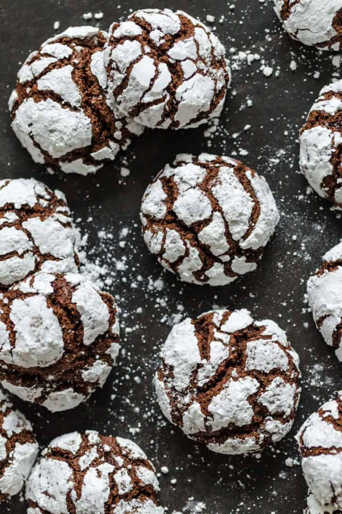

Chocolate Crinkle Cookies

Ingredient List
Servings: 20 cookies
- 1/2 cup cocoa powder , (unsweetened)
- 1 cup granulated sugar
- 2 large eggs
- 1 tsp vanilla extract
- 1 cup all purpose flour
- 1 tsp baking powder
- 1/4 tsp salt
- 1/2 cup confectioners sugar
Instructions
- In a mixing bowl, combine sugar, cocoa powder, oil, vanilla extract and eggs. Whisk until the mixture is smooth
- In a separate bowl, combine flour together, baking powder and salt.
- Add the flour mixture to the cocoa mixture and stir to combine.
- Cover the dough with plastic wrap and refrigerate for at least 3 hours and up to overnight.
- Preheat the oven to 350F. Scoop dough with a mini ice cream scoop for even
portioning into 20 cookies then roll cookie dough
into even-sized balls (it's easier to roll with wet hands) and generously roll each into powdered sugar.
- Place cookies on a baking sheet, being sure to leave space between each of the cookies.
Bake for 10-12 minutes, depending on the size of the cookies.
Cookies will come out soft but will harden as they cool down.
- Allow cookies to slightly cool. Then, move them to a wire rack to fully cool down.